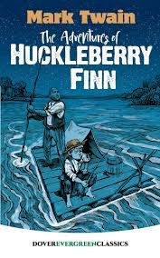
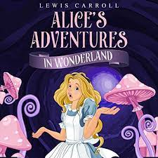

Connemora Library
The Connemara Public Library at Egmore in Chennai, Tamil Nadu, India, is one of the four National Depository Libraries which receive a copy of all books, newspapers and periodicals published in India. Established in 1896, the library is a repository of century-old publications, wherein lie some of the most respected works and collections in the history of the country. It also serves as a depository library for the United Nations.[citation needed] It is located in the Government Museum Complex on Pantheon Road, Egmore, which also houses the Government Museum and the National Art Gallery.
| S.no | Books | Authors |
|---|---|---|
| 1. |  |
Chetan Bhagat |
| 2. |  | Mark Twain |
| 3. |  | Lewis Caroll |
| 4. |  |
Anne Frank |